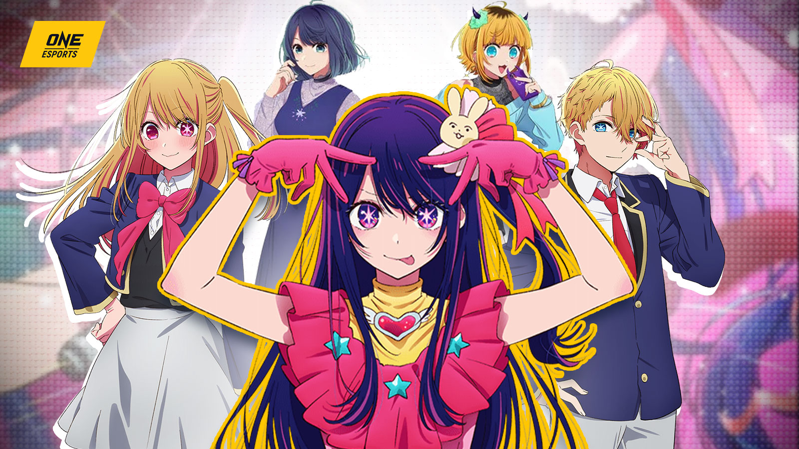

My Hero Academia
My Hero Academia, a beloved manga series by Kohei Horikoshi,
continues to captivate readers with its thrilling narrative and
compelling characters. Set in a world where almost everyone
possesses unique abilities called Quirks, the story follows Izuku
Midoriya, a young boy who dreams of becoming a hero despite being
born Quirkless.
In the latest chapters, we witness the aftermath of the
devastating war between UA High School and the Paranormal
Liberation Front. Deku, now wielding the full power of One For
All, grapples with the consequences of his actions and the weight
of his newfound responsibility. The heroes and villains alike face
the repercussions of the conflict, as the world grapples with the
destruction and loss caused by the war.
As the story progresses, new mysteries unfold and alliances are
formed. Deku's classmates, now more experienced and powerful than
ever, play crucial roles in protecting the world from emerging
threats. The fate of the world hangs in the balance, and Deku and
his friends must unite to face the challenges that lie ahead.
The manga delves deeper into the complex motivations of both
heroes and villains, exploring themes of justice, morality, and
the nature of heroism. We witness the struggles and sacrifices
made by characters on both sides of the conflict, revealing the
complexities of their choices and the challenges they face.
One of the most compelling aspects of My Hero Academia is the
development of its characters. Deku's journey from a Quirkless boy
to a powerful hero is a testament to his determination and
resilience. His classmates, each with their own unique Quirks and
personalities, have grown into formidable heroes in their own
right. Even the villains, while often portrayed as antagonists,
are presented with depth and complexity, making them more than
just one-dimensional evil figures.
The series also explores the societal implications of a world
where Quirks are commonplace. The discrimination faced by
Quirkless individuals, the power dynamics between heroes and
villains, and the ethical dilemmas surrounding the use of Quirks
are all themes that are thoughtfully explored.
My Hero Academia continues to be a must-read for fans of shounen
manga. With its engaging characters, thrilling action, and
thought-provoking themes, the series offers a rich and immersive
experience. As the story unfolds, readers are left on the edge of
their seats, eager to see how Deku and his friends will overcome
the challenges that lie ahead.

Oshinoko
Oshi no Ko is a captivating anime series that delves into the
world of idol culture, exploring themes of fame, obsession, and
the lengths people will go to achieve their dreams. The story
follows twins Aqua and Ai, who are reincarnated into the lives of
a popular idol, Ai Hoshino, and her doctor, Gorou Amemiya.
Aqua and Ai quickly discover the harsh realities of the idol
industry, witnessing the intense pressure, sacrifices, and
exploitation that idols face. As they navigate the treacherous
world of fame, they must grapple with their own desires and the
consequences of their actions.
The series offers a thought-provoking exploration of the darker
side of idol culture, shedding light on the mental health
struggles, exploitation, and obsession that can arise from the
pursuit of fame. It also delves into themes of reincarnation,
family, and the complexities of human relationships.
With its compelling characters, intriguing plot, and stunning
animation, Oshi no Ko offers a unique and captivating viewing
experience. The series has garnered praise for its ability to
balance lighthearted moments with darker, more mature themes,
making it a standout anime in the industry.
As Aqua and Ai navigate the treacherous world of idol culture,
they encounter a series of challenges and obstacles. They witness
firsthand the intense pressure and scrutiny that idols face, as
well as the exploitation and manipulation that can occur within
the industry.
Aqua, with his sharp intellect and strategic mind, becomes a key
player in managing Ai's career. He uses his knowledge of the
industry to protect Ai from harm and help her achieve her goals.
However, his obsession with controlling Ai's life begins to spiral
out of control, leading to dangerous consequences.
Ai, meanwhile, struggles to balance her personal desires with the
demands of her career. She grapples with the pressures of
maintaining a perfect public image while dealing with the
challenges of her personal life. As she grows older, Ai begins to
question the sacrifices she has made for her fame and wonders if
there is more to life than being an idol.
The series also explores the complex relationship between Aqua and
Ai, as they navigate their newfound connection as twins while
dealing with the challenges of their past lives. Their bond is
tested as they face adversity together, revealing the depths of
their love and the sacrifices they are willing to make for each
other.
Oshi no Ko continues to captivate audiences with its
thought-provoking exploration of the idol industry and its impact
on individuals. The series offers a nuanced portrayal of the
complexities of fame and the sacrifices that people are willing to
make to achieve their dreams. With its compelling characters,
intriguing plot, and stunning animation, Oshi no Ko remains a
standout anime in the industry.
!...more mangas...!